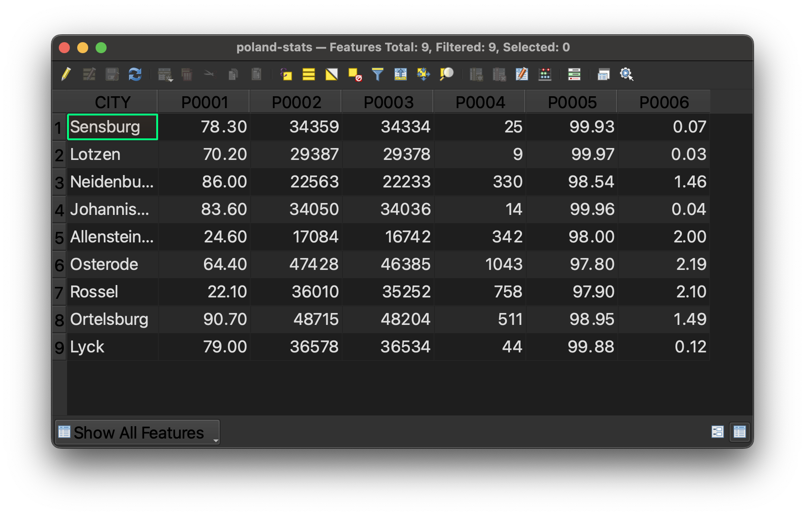
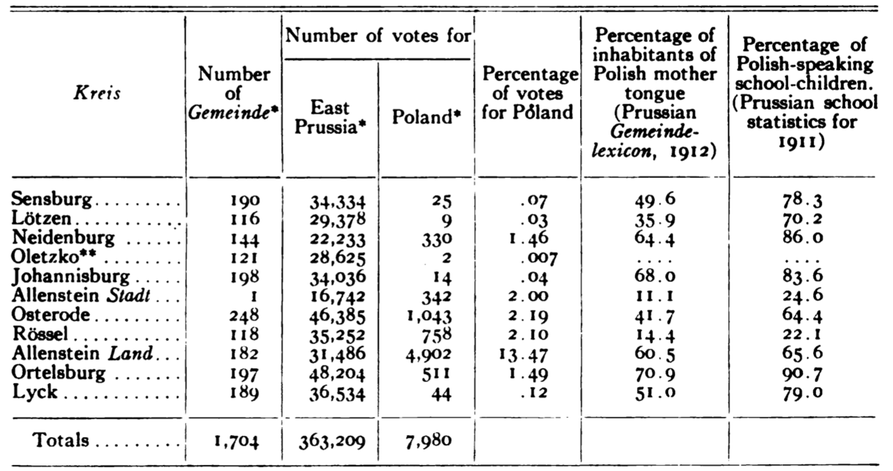

7. Browse Maps and Data
Polish cities data: interactive map view
Polish cities data: table view

This is what the Polish cities GIS dataset looks like, displayed in tabular view in the GIS software. To interpret what the column headers mean, use the codebook pictured below. The codebook and dataset are both available for download as spreadsheets in .csv format. You can open these files in Excel, if you would like to use the data, but don’t want to map it. Here is the data download link
.
Polish cities data codebook
 The codebook, used to interpret the column headers in the Polish cities dataset.
The codebook, used to interpret the column headers in the Polish cities dataset.
Polish cities data source

The source of this dataset is a table found in The American Political Science Review. So long as sources contain some indication of where phenomena occur, such as city names, or coordinates, we can transform the information into GIS data used for map making.
Polish cities data symbolized and compared against nationalities map
 In the GIS tutorial, we learn how to make this map, using the above datasets to compare the percent of plebiscite vote results for East Prussia (Germany) and Poland, respectively. This data is overlaid onto a map from 1919, showing nationality demographics of Poland at the time – red for Polish, and blue for German.
In the GIS tutorial, we learn how to make this map, using the above datasets to compare the percent of plebiscite vote results for East Prussia (Germany) and Poland, respectively. This data is overlaid onto a map from 1919, showing nationality demographics of Poland at the time – red for Polish, and blue for German.